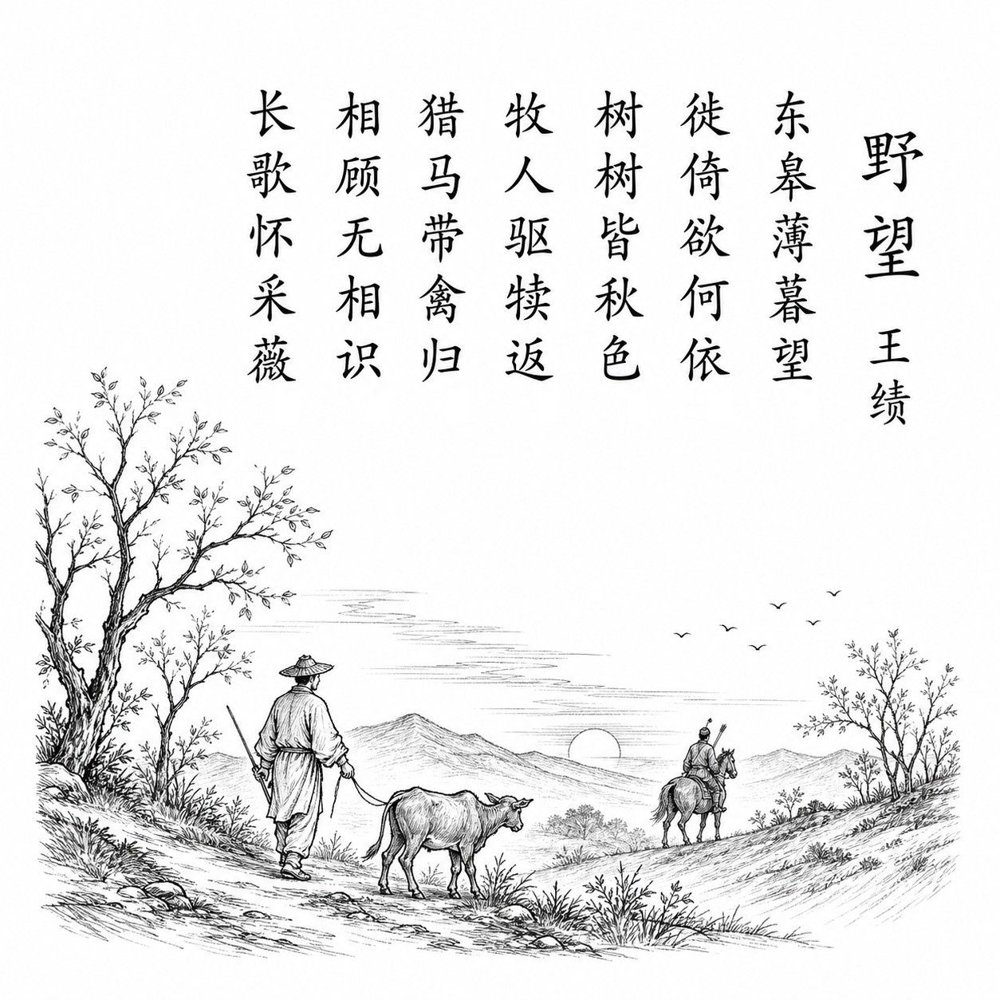

唐 · 王绩
野望
东皋薄暮望，徙倚欲何依。
树树皆秋色，山山唯落晖。
牧人驱犊返，猎马带禽归。
相顾无相识，长歌怀采薇。
白话翻译
黄昏时站在东皋远望，来回徘徊，不知心灵可以依靠什么。
每棵树都染上秋色，每座山都笼罩在落日余晖中。
牧人赶着牛犊回家，猎人骑马带着猎物归来。
与他们相看却并不相识，只好放声长歌，怀念伯夷、叔齐采薇而食的隐居生活。
为什么写这首诗
王绩仕途几度进退，最终回乡隐居，自号“东皋子”。诗写傍晚野望：村野景物安静有序，但诗人却感到无人相知，于是借“采薇”典故表达归隐与孤独。
关于作者
王绩（约585或590—644），字无功，绛州龙门人。其诗朴素自然，远离初唐宫廷诗风，《野望》被视为早期成熟五言律诗的代表。